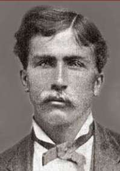

|
Autour du Monde à Bicycle  par Thomas Stevens Tome 1
Table des Matières
1. Couverture 2. Page titre 3. Table des matières 4. Avant-propos 5. Biographie de Thomas Stevens 7. Les grand-bi de Thomas Stevens 8. Préface 9. Chapitre 1 - Dans la Sierra Nevada
Page précédente - Page suivante
|
| ADMINISTRATIVIA Dernière mise à jour de cette page : nov 201. p-v* URL : http://orkic.github.io/bicygonzo Contactez-nous : Contact * p-v : post-visitation |
Site développé en collaboration avec Brothel & Cie inc.® ™ sur cyberdeck : Ono-Sendaï Cyberspace-11, O.S * : Hypercloud 7.4, browser-text.edit ** : StalkXplorer e-Intelligence 9.3
* Yoyodyne H.D div. (Yoyodyne Hardware Development division) produit Hypercloud. ** Yoyodyne W.R div.( Yoyodyne Web Research division ) produit StalkXplorer. Yoyodyne H.D et Yorodyne W.R font partie de Yoyodyne corporation.
A site from Outerspace Publishing
Website © Copyright - ef. Bicy Gonzo.